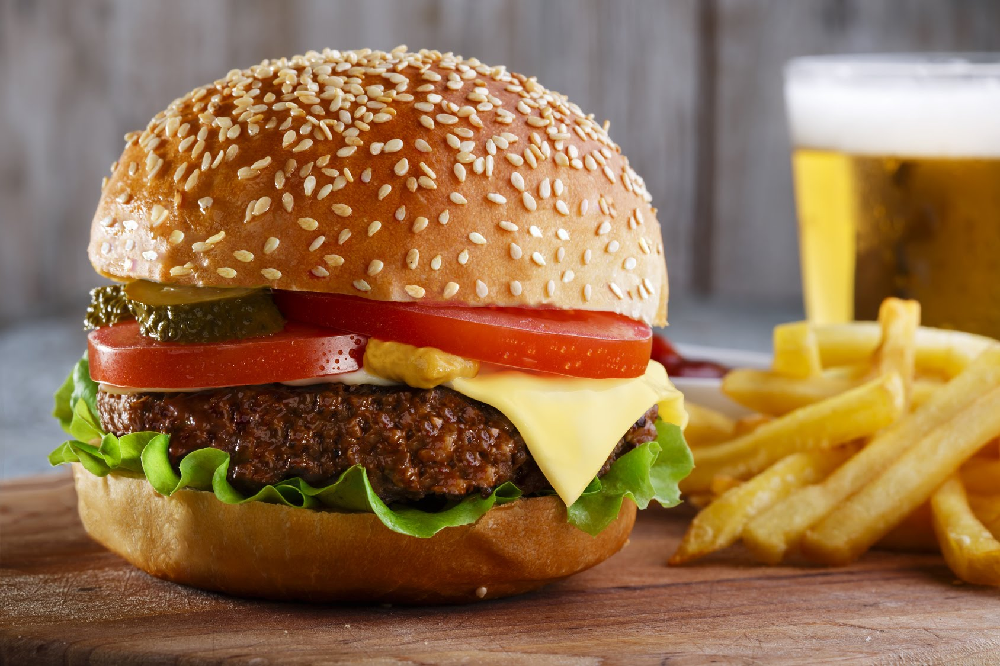
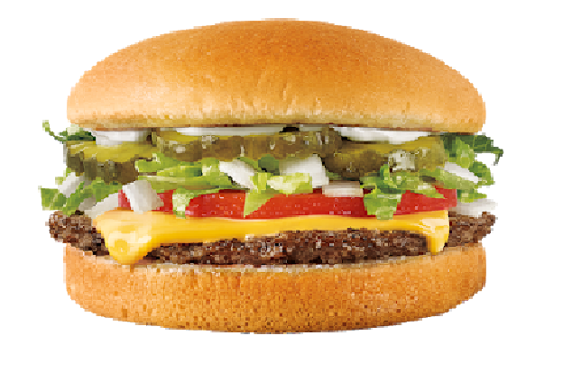

Cheeseburger is a hamburger topped with cheese. Traditionally, the slice of cheese is placed on top of the meat patty, but the burger can include many variations in structure, ingredients, and composition. The cheese is normally added to the cooking hamburger patty shortly before serving, which allows the cheese to melt. As with other hamburgers, a cheeseburger may include toppings, such as lettuce, tomato, onion, pickles, mustard, mayonnaise, ketchup, or bacon; examples of less common toppings might be spinach or olives.
1 1/2 pounds ground beef chuck. 4 1/2-inch cubes pepper jack cheese (about 1 ounce total). Kosher salt and freshly ground pepper. 1/2 tablespoon vegetable oil. 4 slices cheddar cheese (about 2 ounces). 4 hamburger buns. Ketchup, mustard and/or mayonnaise, for spreading (optional).
Divide the beef into 4 equal portions. Press a cube of pepper jack into the center of each and shape the meat around the cheese; form into patties, about 4 inches wide and 3/4 inch thick. Season the patties with salt and pepper. Heat the vegetable oil in a large skillet over medium-high heat. Add the patties and cook until browned on the bottom, about 4 minutes. Flip the patties and top each with a slice of cheddar; cook 4 to 5 more minutes. Meanwhile, toast the hamburger buns and spread with ketchup, mustard and/or mayonnaise. Fill with the burgers and top with lettuce, tomato and/or red onion. Serve with pickles.
 